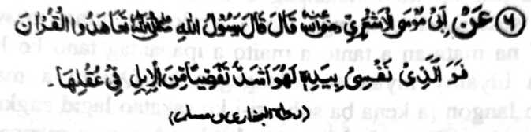
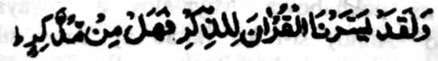
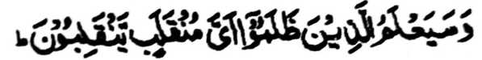

Miyakathitayan ko Abu Musa Al-Ash’ari (Radhiallaho ‘Anho) a pitharo iyan a pitharo o Rasulollah (Sallallaho ‘Alaihi wa Sallam), “Ibet Rekaniyan a zisi-i sa tangan Niyan so ginawa ko ka sekaniyan (a Qur’an) na lebi a maga-an a kapeliyo niyan ko manga rareb a di so onta ko kaperedot iyan ko iket iyan.”
Opama ka so tao na indarainon iyan so kapephagipata niyan ko ayam iyan, na anda den-i kapakaredot iyan ko iket iyan, na phalagoy. Sakamaoto mambo a opama ka so Qur’an na di siyapen, na di khatanodan ago si-i den khisong ko kakhalipati ron.
So kababaloy o Qur’an a pekhilangag na mapepento a mo-odizat angkanan a Kitab. O di mo-odizat na apiya so kilangagen ko kitab a diyangka o sabagi-on (a Qur’an) so katas iyan, o di na ika telo ron bagi na kena ba giyabo a karegen niyan ka mararani sa di den magaga. Sabap ro-o na so kababaloy o Qur’an na malebod ilangag na inaloy o Allah a limo a pho-on Non sa Surah Al-Qamar, ko miyaka-pira makhaso-kasoy:

“Na saben-sabenar a libod Ami so Qur’an ko bapekhatanodi ron. Na ba aden a Phananadem?” (Surah Al-Qamar: 40)
So mizorat ko Jalalain na inisorat iyan non a so paka-iza a madadalem sangka-iya a Ayaat na mata-an a aya benar na paliyogat. Giyoto-i sabap a pikhakaso-kasoy o Allah so gona o kilangagen ko Qur’an, ogaid na opama ka seketano a manga Muslim na tanto tano a somopak sa kapikira tano ron sa giyangka-iya a ola-ola [kilangagen ko Qur’an] na da-a kipantag iyan ago ilang a masa ago bager, na giyangka-iya a karibatan o manga ginawa tano na kiyatatangka-an a mibinasa reketano.
Tanto a piyakamemesa, sabap sa giyabo a kiyapaka-moayan o Taurat a pho-on ko milalangag o Uzair (‘Alaihis Salam), na iniporo sekaniyan o manga tao a tiyalowan niran sa “wata o Tohan,” na mata-an a tanto a maito a ipapantag tano ko limo o Allah a biyaloy niyan so kilangagen ko Qur’an a malebod reketano langon [a kena ba sobo si-i ko sakatao lagid angkanan a miya-ola-ola o Taurat]. Mipantag ko lagida nan a manga tao a pitharo o Qur’an,

“...na katokawan den o siran a manga salimbot o antona-a darepa a khandodan-i khandodan niran.” (Surah Ash-Shu’ara: 227)
Sabap bo sa limo ago gagao o Allah a kalebod a kiphelangagen ko Qur’an, ogaid na si-i ko oriyan noto na opama ko indarainon o tao, na pakilipatan rekaniyan. Madakel a masakit a tapa-os ko manga tao a kiyalipatan niyan so Qur’an ko oriyan o kinilangagen niyan non.
Miya-aloy a ‘riwayat’ o Razin (Radhiallaho ‘Anho) si-i ko [kitab a] ‘Jama’-ul-Fawa-id’ a giyangka-i a Ayaat na maka-aantap san:
“Na saden sa tomalikhod ko tadem Raken, na mata-an a aden a rek iyan a kaoya-goyag a masimpit, go witen Nami sekaniyan ko Kalilimod ko Alongan a Qiyamah a bota. Tharo-on niyan: Kadenan ko! Antona-ai sabap a kiyawita Ngka raken ko kalilimod a bota ko, a sabenar a miyabaloy ako a pephaka-ilay (si-i sa donya). Tharo-on (o Allah): A lagid anan a miyakatalingoma reka so manga Ayaat Ami na piyakalipatan ka oto; na lagid anan a sa Alongan na-i na pelipatan ka!” (Surah Taha: 124-126)